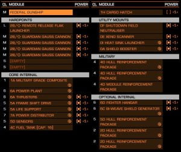

A ship build for the Federal Gun Ship approved by A.X.I. detailing ship load out and engineering modifications.

Note that power priorities should be set accordingly to your specific chosen module configuration
Direct Link: AX-FGS
Federal Gun Ship Wireframe with permission from Anthony Hunt – (elite-dangerous-blog) – Archive Link, as site no longer exists.